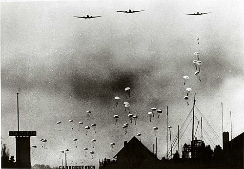
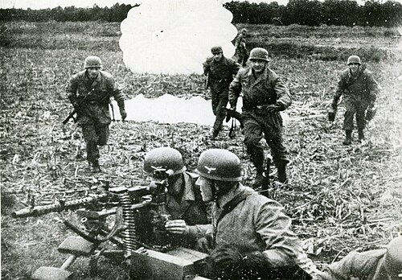
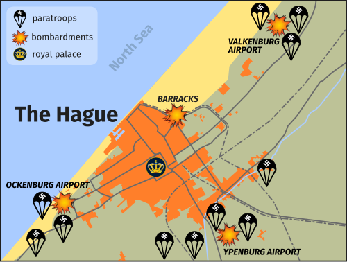
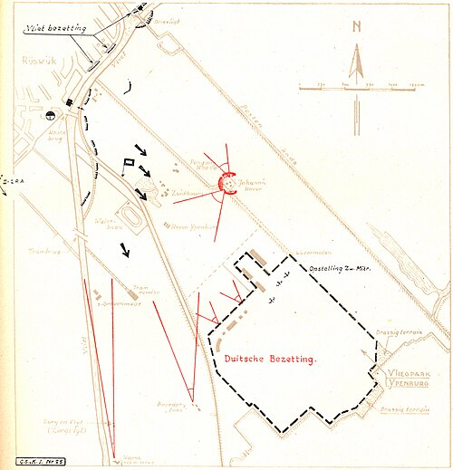

Date
10 May 1940
Location
The Hague, Netherlands
Result
Dutch Tactical Victory


Overview
An early airborne operation where German paratroopers attempted to seize airfields and the government; Dutch resistance inflicted heavy losses.
| Faction | Commanders | Casualties |
|---|---|---|
| Netherlands | Van Oorschot | ~500 killed |
| Germany | Kurt Student | ~1,700 captured/killed |


The Conflict
German airborne units landed to capture key points, but Dutch counterattacks and anti-aircraft fire destroyed many transport aircraft and repelled landings.
Although the Netherlands eventually capitulated, the operation delayed German plans and cost them significant airlift capability.
Significance & Aftermath
- Dutch forces inflicted notable losses on German paratroopers and aircraft.
- The failure impacted German airborne operations and logistics in subsequent campaigns.